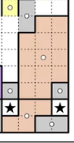
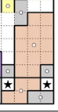

写在最前
“西十六之精妙，自四方、当立则初现，至千字、末谜（FM）则大成……”
“七大者，密吧创始人……今做西十六，七时浮想联翩，上歧路、下难题。……弹幕有琵琶者，行提示与七大……常崩溃，言名言、述误思。”
“西十六之参赛者，七大直播观者等，始在文档撰七大事件，以时间为轴，以名言为文，自称史官……”
“故七大之歧路，仍持续之；弹幕之琵琶，未终结之；史官之记载，亦未完之。”
感谢
👍💯👏以下史官·七之蚁参与编辑（排名不分先后，先到先得）：
几何星空
（下届CCBC17不会有这里面的题吧）shiveords
（肉脯脯/家里有个零食店）dao__li
（《七大云》栏目常驻史官）落堀
Sigma
噬梦浊流
（队内名称为llhhkl）（不要藏题不要藏题）addmeal
CeI₂NK₇
cyx.
(思路挺广的新史官)sky
(& aqua?)（Reviver Team / cff_0102）（某不愿透露姓名史官）
苍穹玥夜
yswyyy
Copy&Paste
JZE
GreasyPig
蓝矾
Tellurium
空城
EterIll
(网页化进行中)
正文部分
队伍信息：

🚩第一日 一道好题的诞生
8.18 20:00-20:30 模拟炸服
8.18 20:49 完成「五音俱全」


8.18 21:00 完成「通用机器人」
8.18 21:13 意识涣散
8.18 21:20 意识到多解
8.18 21:22 完成「举🚩不定」
8.18 21:29 拼出“义”
8.18 21:33 拼出“未”/“末”
8.18 21:35 拼出“勺”/“月”
8.18 21:36 拼出“江”
8.18 21:38 爆出“西江月”
8.18 21:40 爆出“秋收起义”
8.18 21:42 完成「一笔画」


8.18 21:43 开始尝试做“四方谜”
8.18 21:52 向弹幕寻求帮助 信用点-20000


8.18 22:00 “这个题当时真的有人能秒吗”
8.18 22:02 "今天的目标是四方谜一定要做出来！"
8.18 22:05 “对吗？不对吧？对吗？不对吧？......"
8.18 22:12 “哦~我似乎有点感觉了"
8.18 22:18 利用增速异常的信用点疯狂消费信用点直接看答案，引起群友争议
（诶seven这名选手信用点增速怎么是我们做这道题的时候的五倍啊，七大来查一下谢谢）

8.18 21:42 完成「一笔画」
8.18 22:21 得到：SEND NAZO “仰” 开始出题
8.18 22:23 "我们要做一个 善良的人，与人方便 与己方便"
8.18 22:25 《哪吒闹海》

解析：痛仰乐队
8.18 22:29 在CCBC官方群內发言：“这谁出的题啊，太好了吧”

8.18 22:35 开始出备选方案2
8.18 22:38 "出孬题我可是太擅长了"
8.18 22:40 "我可太喜欢这种题了，我可以在这出一天”
8.18 22:42 "我的目标是 把千字谜所有题目都做出来"


8.18 22:43 直播琵琶，完成「四方谜」
我看是我欲因之梦吴越

8.18 22:59 “让我们来看看是谁出的题”“原来是你小子”
8.18 23:00 把东京塔🗼认成法国埃菲尔铁塔


8.18 23:16 完成「恶魔斯基」
8.18 23:50 完成「数字」
8.18 23:53 明日目标：完成序章（未能达成）
🚩第二日 吧主七大的自尊
8.19 20:32 觉醒前世记忆，以惊人的注意力找到霓虹七色的代表图 “我有印象字是我P的”
8.19 20:42 “一不小心撇到弹幕”（一不小心琵琶了）
8.19 21:20 “怎么做了一个小时还没做出来一道题”
8.19 21:24 完成「霓虹七色」


8.19 21:26 拥有前世记忆的七大大刚解锁meta,试图直接提交STAR FARMING

8.19 21:36 将“小题大做”全部单词转为大写
8.19 21:43 被弹幕中琵琶提醒，意识到大小写转二进制，发出“又看弹幕，又看弹幕”的懊悔
8.19 21:49 发现不会加B站直播的房管 //“唉 我怎么什么都不会啊”
8.19 21:54 发现MacOS大小写错误，发出“天杀的苹果”的感叹
8.19 22:02 绷不住了，发现大写I和小写l一样没发现（超长叹气），发出最高指示：记住马克欧克朗


8.19 22:11 deepseek开始浮想联翩

8.19 22:12 用谷歌得到植物后，开始怪百度怎么不早说


8.19 22:13 完成「小题大做」
8.19 22:30 发现成语竟然有定字搜索 “哦还有 这么神奇的功能”
8.19 22:38 爆出战国策，完成「相辅相成」
8.19 22:45 把“当立”玩儿成消消乐
8.19 22:56 “房管把这个榜一大哥给封一下”
我不应该琵琶的555，好心提醒差点被禁言555（从此立誓不在琵琶）——当事人本人留
8.19 22:58 设置粉丝牌名字为“密码菌”，花费 20 硬币
8.19 23:03 小孩子才做选择，七大决定“当立”的hint都要，“这是一个dropquote……这是个啥？”

8.19 23:10 凑词爆组，拼好句 《一仗，我仗，未仗，她仗，杀仗，请仗，房仗，的仗，这仗》
8.19 23:14 尝试通过国际信号旗，进行爆破

8.19 23:18 ”这是温姐么？我被温姐批评了，啊~~~太伤心了“
8.19 23:27 “现在金盆洗手”“已经金盆洗手”
8.19 23:30 大脑已停止思考
8.19 23:40 “当心立...当心立什么呀？”
8.19 23:43 “这谁出的题，温姐，怪不得，怪不得呀”


8.19 23:48 打开“星之所在”的hint1
8.19 23:52 被投喂倒付费站内信

8.19 23:55 “为了大家明天的正常上班正常作息，我是真的……哎，要开吗”“好吧，我信你们了” 感动了xdm 好不容易七大才从自己仅剩的14w+点数中出了6k点(
8.19 23:56 打开星之所在hint2
8.20 00:00 “不行今天我一定要看到我的指南”“虽然今天已经不是今天了”
8.20 00:05 ζ “这是什么，epsilon吗”
8.20 00:07 自我感觉良好“终于走上正轨了”
8.20 00:08 "天姥（lǎo）"
8:20 00:11 “我连提示都开了题面还有用吗”
8.20 00:14 “我很佩服这八百多个队”“温姐你就死心吧，我也快死心了”

8:20 00:16 “拜耳命名法”“巴耶”“妈耶”

8.20 00:19 寻求弹幕帮助，想知道是否题目与小题顺序对应
8.20 00:19 “毕竟答案是star farming”（开始通灵）
这里史官们爆发了
激烈的讨论:要记的东西太多导致史官打架了
我们很和谐嘟
大家可爱捏
真的很和谐的
🩷🩷

8.20 00:20 七大哀嚎：“难道不应该在这儿吗？这是七个字母，这也是七个字母～”
8.20 00:25 七大哀嚎：“我们已经不知道搜了多少遍了” (七大可爱~)
8.20 00:26 “我们一步步来，脑子已经转不动了”
（七大绝望，我猜下面要直接Star Farming了）（666不烟了）
（传下去，CCBC创始人直播琵琶）
（什么琵琶，这是“我重生了，重生成为了七大，这次我要夺回属于我的一切，我看这题答案是star farming？”）
（史官们去开头署个名~）（新来的看到这里也记得回去署名）
（史记纪录七大，B站纪录史官，我们都有美好的未来）
8.20 00:28 逐步发现有很多答案能对的上 “对上辣！我终于对上辣！”
8.20 00:29 七大决定观看“史记”“我下播前把七大史记看一遍，我要，我会看的”（荣获官方认证）（👍💯👏）（七大\o/\o/\o/\o/）
与此同时，本页面完成了史官整理与感谢块的添加。好耶
（111真看嘛）（集体上电视）


8.20 00:33 七大对仙后座发表重要讲话：“真的有叫策的恒星啊，真有你的啊仙后座”
8.20 00:38 “我为什么又要用百度*2，不要用百度，会让人不幸”（明明是自己注意力涣散却怪罪百度）（七大可以试试看用嘴“泡面”）
8.20 00:39 找到新恒星海石一（Avior）
8.20 00:40 “不要走到歧路里”（搜索OB星）
8.20 00:40 找到吴越星
8.20 00:41 在知道了“sAArAaAminA”后便自信发言：“其实已经能看出来答案了现在，不过还是再找一个吧”（能看在哪）（只要胆子大nutir还是可以的（吗））（区区5次）
8.20 00:46 找到 Sadr“提取e，他是最后一个，真的吗？我已经紊乱了，彻底紊乱了”（怎么有人琵琶还找错了）
“怎么是天津一，你个骗子”（auv津爷您吉祥）
8.20 00:50 得到 sAAr AaAming “本场直播点赞已累计一万”(附带狂笑(迫真))
8.20 00:51 “我已经说不出话来了，是大理星吗？”
与此同时，由于对更加充分的交流的需要，史官群建立
（记得回答：7大歧记）

8.20 00:52 指3为2 “还剩两个，还剩两个，还剩二加一个”
8.20 00:53 提取出南三角座 α 后疑惑 Triangulum Austale 第三个字母不是 t 而是 i
8:20 00:53 “叟大力是你吗叟大力”“阿里木是你吗阿里木”“大吏目是你吗大吏目”“你起了个好名字啊大吏目”“克儿萨是你吗克儿萨”“克儿萨是你啊克儿萨”(难绷空耳)
8.20 00:55 再次被投喂倒付费站内信提示

8:20 00:55 呼之欲出的“五三”（以为要5年高考3年模拟了）

8.20 00:56 “江波座”“江波座你在哪啊”“江波几江波几”（注：人家是波江座）
🏁 8.20 00:56 完成序章meta[META0]
“前进！！！！！！”（ohhhhhhhhh）

8.20 00:57 决定返回“当立”
8.20 00:58 “来，弹幕，这几个字母是对的吗？”（这还不-62500？甚至不用延时查看）(来个staff把七大信用点扣成负的) （这下n人n足竞速跑了）

8.20 00:59 由于有一个 a 字母对但是位置不对，导致观众区出现混乱，随后出现 wordle 式回答
8.20 01:00 再次收到一个倒付费站内信
8.20 01:00 “我们怎么能用这种投机取巧的方式呢”（你用了多少次啊！）
8.20 01:01 “天呐，已经一点了吗”
8.20 01:01 完成「当立」
8:20 01:02 进入指南，上头了，完全不记得之前说过的：“为了大家明天的正常上班正常作息……”
“好吧好吧，再看一眼题吧”进入浮想联翩
8.20 01:02 “什么嘛，竟然是Seven起手”
8.20 01:03 针对《你的名字。》，七大尝试使用成语工具
8.20 01:03 “我们把第一步解开”“AABB式成语，我们来试一下吧”
8.20 01:04 “这还有个句号吗？这是一下子能猜到的吗？”
8.20 01:05 “完完蛋蛋”“毫无头绪”“按理来说应该提交一个浮想联翩什么的，是不是，有没有道理”“哈哈哈哈”“对啊，我的名字？”

8.20 01:06 又双叒叕收到一个倒付费站内信（本场直播的第四个）
8.20 01:08 输入“我的名字”“个人昵称”“选手ID”“还有一个句号”“昵称好像是左右结构”“昵称”“姓名”“ID”“称 呼”

“SEVEN是啥，数字，他总不能把我这个昵称的含义都理解出来吧，是吗是吧”
“还能管这个叫什么呢”
"Seven是什么，Seven是7啊，是我的名字啊”


“你没有名字（笑），好吧。你的名字吗？好吧。”
8.20 01:09 主播没声了（不说话装高手）

8.20 01:11 主播有声了，决定继续简单的做一下直到得到“违禁词”（然而似乎认为是“阿里巴巴”）（小声嘟囔：似乎忘记了还要看史记的誓言）
8:20 01:13 准备休息“我们要不然今天就先到这里？”（这里的明天是指？卡bug是吧）
8.20 01:13 明日目标 解出浮想联翩，三星Galaxy和你想Roll出怎样的比赛中的至少两道题
8.20 01:15 进入“你想roll出什么样的比赛”
8.20 01:15 Roll出2,5。七大被小七无视，达成结局2
8.20 01:16 查看史记未遂，进群翻遍所有地方没找到本链接，结果忽略了下面群友的最新消息
8.20 01:17 终于成功进入初次本页面
8.20 01:18 好奇图片的制作手段
8.20 01:19 “真的有人看录播吗？这么长，拿来下饭？那不得下一天？”
8.20 01:20 点赞了这篇史记
8.20 01:20 七大劝睡“你们是真的闲啊～哈哈，就不能好好地睡一觉吗你们～
8.20 01:20 明日目标浮想联翩和投色子：“纸笔可以浅做一下”
8.20 01:21 下播偷看，并在前面插入一个“偷看”
8.20 01:24 在CCBC官方群内发言：“图寻我必秒之”
8.20 01:24 CCBC 网站短暂崩溃，疑似七大下播浪潮使得服务器被赛博震慑，产生波动导致502
8.20 01:30 CCBC官方群七大大发言："😭我要朝谐星路线发展了"
C1314:一道好题的诞生 BV1Nj411f7xQ
(七大大可爱捏)
8.20 01:30 七大阴暗偷看史记（甚至还是微信登录

8.20 02:00 七大依然阴暗偷看史记,还没看完 （不会只是一直登着没下吧）（期待七大的留言）
8.20 03:00 七大下了，七大晚安~
8.19日-8.20日凌晨 更新——完
（真的是20日么[doge]）
🚩第三日 全果体与乃子房
由于不可抗力因素，本节部分词语进行和谐，阅读时请自行补回偏旁，网站尽可能保证不影响阅读。
8.20 20:23 史官其一发表奋斗宣言，要与七大比速度（注：在21:26左右便已完成）
8.20 20.30 晚上场开始，准时！敬业！主播也加入最新指示：
8.20 20:38“其实这道题后面会出现什么主播还是有概念的”（回来了，我的前世记忆）
8.20 20:40 DeepSeek给出错误结果，“我没有想到会卡在这里”

8.20 20:49 “真的有人会专心看我解这种题目吗”
8.20 20:52 被弹幕诱导搜索“白复生”
8.20 20:59 “诶，又有一个红色了，不对，那是我点的”
8.20 21:05 觉醒前世记忆“难道它就要出来了吗？”看着“大卫”填写了“生XX”
8.20 21:13 开始尝试中国各个省级行政区，以及广深、石家庄（因为BGM放的草东）
8.20 21:20 发现自己翻成了1952年的省级行政区划表
8.20 21:28 搜索“呐喊 台湾”搜到了不能搜的话题，立刻关闭网页
8.20 21:32 “有点拨云见日的感觉”
8.20 21:37 填出“全裸体” “那这个就是那个吧”

8.20 21:39 “要是再搜这个直播间是不是就没了”
8.20 21:43 开始尝试各种前世记忆“背一下”（然而失败）
8.20 21:49 “水浒（xǔ）传（chuán）”

8.20 21:57 指出“孙悟空”应该和“桃子”相连
8.20 21:59 “唐僧是少林寺的什么人”
8.20 22:02 填出“性交”但是找不到在哪
8.20 22:07 “是白臂膊吗？我当时背的就是白胳膊” “你在哪里？小白”
8.20 22:11 尝试基于鲁迅构建坐标系通灵

与此同时，Σ胜利归来（注：Σ此时已经将roll用AI计算概率做出）
8.20 22:12 “直觉告诉我不是这么做，因为弹幕里没有那么多叹号” 接着弹幕就出现了一大堆叹号
8.20 22:15 尝试搜索其它词😰

8.20 22:18 弹幕中感叹号依然如潮水般翻涌，基于“牛顿三定律”的搜索提出了“七大定律”
8.20 22:20 尝试“球形闪电”
8.20 22:20 “你们不要刷屏了好不好，这这这太多叹号了，刷的我意识模糊了都”
于是弹幕在感叹号中掺杂了问号
8.20 22:25 尝试“变性人”
8.20 22:25 “相亲为什么不连恋人？” “还是不够严谨嘛，出题组”
8.20 22:30 “秦始皇是什么人呢？阉人，秦始皇是个男人，是个古人”
“浮想联翩”已控制监管者(username:Seven)120分钟
8.20 22:34 "对不起刘亦菲，改天请你吃饭”
七大超话来的，谁是刘亦菲😡
8.20 22:37 感谢直播间的一百多名观众不离不弃
8.20 22:39 根据观众建议填出“功守道”后发现什么都没连出去 “你个骗子”
8.20 22:42"我会根据精神状态判断要不要直播到完赛"
8.20 22:47 “对！为什么没有北大，这严谨吗？”
8.20 22:48 向deepseek询问“与性交有关的词语”

“他不知道”
8.20 22:49 收到了今天第一条倒付费站内信，随后提交答案“rainbow”，回答错误
怎么还有 LGPH#1 的事


8.20 22:50 “嗷↓ 嗷↑ 嗷↑ 嗷↑ 嗷↑ 嗷↑” 填出最后一个所需的生开头三字词语，感谢提示弹幕
“感谢这位——槡之东兮苨之南，感谢你节省了大家的时间”
七大终于找到了自己求之不得的生殖器
？？？(好怪啊)
这下真是小七妹子了（
8.20 22:56“明日歌......明日什么歌呢？是歌嘛？”
《明日歌是五字的歌曲吗》
8.20 22.57 成功在sc诱导下填出“同性恋”
8.20 22:58 “山东有什么子？乃子吗？不会有这么下流的词吧”

七大最后也没有找到自己求之不得的奶子
这下是小七飞机场了（
8.20 22:59 “明日歌远，那是个啥” “明日歌是个什么”
8.20 23:00 “什么是远五字，明日何其多吗”
- 《前大远程》
8.20 23:01 完成「浮想联翩」
“群众的眼睛是雪亮的”
耗时2h31min👍💯👏
8.20 23:02 “弹幕想听什么歌么？ 随便放一个吧”
8.20 23:03 本想尝试●■★▲ “我感觉这个应该很难”，后在弹幕建议下进入“三星Galaxy”
8.20 23:04 “我们来直接看提示！”
“我们先来做五分钟，如果一个点都没有我们就来看提示，说实话规则都没看懂”
8.20 23:05 尝试理解 Penpa+ 的使用方法
“这有没有中文啊我@们来看一下”
8.20 23:11 询问弹幕要不要开三星galaxy hint2 表示开了的话巨简单 “好吧，那我们还是继续做一下吧”遂放弃开hint 2（暂时

与此同时，史官群内对于（三星、图寻、是猫咪耶）后补提示喂饭吃一事展开了激烈的讨论
（史官群对二进制饺子的提取hint的改动有着极其激烈的反应） 8.20 23:27 “它难道是韩文吗？（看到弹幕琵琶）啊，真的是韩文啊”

“我是先说的韩文，再看了眼弹幕，好吧”
8.20 23:35 意识到纸笔“还是有一定逻辑的”重新出发
8.20 23:39 以为直播间来片哥了
史官差点没一个[哭笑] “我还以为是广告哥呢，差点ban了”


8.20 23:41 “你们看下这是不是一个星星的位置”（最后一行第二个）（那里画了个X）（事实上是星星）
支持正义制裁
8.20 23:47 推不出来质疑弹幕给的信息是否正确“这里真的是星星吗”

8.20 23:47 “真的扣了么？（查询信用点）没关系 扣我也还有很多”

8.20 23:48 dodomos 准备录解析
8.20 23:49 回复弹幕“是呀，如果我都能做的出来的话那么大家看我录的也能做得出来”
“先假设吧”还在质疑，还在不相信（
8.20 23:54 “来吧 弹幕帮我检查一下有没有错的 我感觉是没有了”询问弹幕目前是否全对得到否定回答后直接撤回到五分钟前
与此同时，塞德莎（莎佬）也开始了直播进行三星解谜 （在约75min后，塞德莎成功解出三星）

8.20 23:58 再次请求弹幕信检查
 

8.20 00:02 “我感觉明天（实为今天）很快就能解出来” “还是温姐对我好啊”
8.21 00:03 厕遁，一回来就看到弹幕说是错解，“这也能错？”
8.21 00:07 决定看史记（后立刻被弹幕叫走检查三星galaxy）

8.21 00:09 决定看完史记后下播（下面 Penpa+ 的正计时已经悄无声息来到1小时了）
“所以秦始皇是什么人来着” “秦始皇你是什么人！” “有没有弹幕告诉我”
“秦始皇为什么是异人，他有超能力吗”
8.21 00:12 “乃子怎么了，你们不知道北京有一个地方叫乃子房吗”


8.21 00:13 播放《左小祖咒去乃子房》，作为下播曲
8.21 00:14 又给本页点了一次赞，感谢送礼物的观众和透露答案的弹幕
8.21 00:15 结束直播，七大辛苦啦，今天要早点休息哦
1.这里真的什么也没有吗？
已解锁(50信用点)是的，请先看别人的留言。
8.21 00:19 热烈欢送七大上床

8.21 00:20 七大 狡辩 解释 昨天三点才睡的原因


你来的真早！
我来啦～
nihaoya!
嘿嘿~
hihi~~
orz史官都太勤奋了
就位( 【没准备好】
就位了
（以上是打招呼的内容）
第四日 凳子茶几小抽屉
8.21 13:00 群史官们力捧七大成为主播

连续包月、连续包年的七大
8.21 20:30 继续昨天的三星纸笔
8.21 20:35 七大决定稳扎稳打，做五十天
8.21 20:36 “大家可以连着一个月两个月的时间天天有直播下饭，真是享福了”“我也享大福了”
8.21 20:38 七大如何评价宣传图里把大脑做成种子的行为——“种树首先要用脑子种树”

8.21 20:39 "哪里有直播公告啊？我的直播间""哪里有直播公告啊？我的直播间""我的直播间"（回音）
8.21 20:40 “**不要打扰我的节奏，节奏你知道么。**我知道这句话很快就会出现在我的语录里了”


8.21 20:43 点名表扬“提示的好呀 提示的好呀”
8.21 20:46 “现在不是在比赛，我们现在是享受做题的过程，所以过程很重要”
8.21 20:47 “感谢这位B友，节约了大家的时间”


8.21 20:53 "是哪里出问题了呢？""是哪里出问题了呢？""是哪里出问题了呢？"“嘀”

8.21 20:58 “来把我这句话加到我的语录里：错不了一点~”（自豪、骄傲）
8.21 21:00 做出三星纸笔！开始提取！
8.21 21:01 错误的开始提取“韩文”


8.21 21:05 七七韩语开课：学习将韩文理解为象形文字 “小桌子”“小椅子”“小凳子”“墙”“墙上有个挂钩”“小抽屉”……

8.21 21:08 决定为大家省点时间，开启hint1

8.21 21:10 “看来我多直播还是有效果的啊，提高了我的直播水平”
8.21 21:12 世界名画《内部边界线》


(紫色的“内部边界线”)(这个我会，三叉戟嘛↑)
8.21 21:13 理解“内部边界线”“啊哈哈哈”（尴尬又不失礼貌的笑声），“啊~小抽屉出来了”
8.21 21:15 离成功最近的一步，决定使用谷歌翻译韩文
8.21 21:15 与此同时 dodomos老师回顾了CCBC12的一道小题
七大在B站还做过这道题的视频解析
8.21 21:19 七大手绘韩文：“圈 卜 L”

8.21 21:20 “韩文的你好是什么，朋友们见证奇迹的时候到了！”
8.21 21:21 完成「三星Galaxy」

8.21 21:22 "完美就像新的一样~"
8.21 21:23 对“二进制饺子”发出猜测“拼好字？”
8.21 21:24 对“你想Roll出怎样的比赛”发出言论：“不行不行！这个阅读量太大了”（跑路
“那好吧，听弹幕的话肯定没有错”（又回来
8.21 21:25 七大无视哈神

哈神达成结局2：认真的小七无懈可击
8.21 21:28 七大认真做题ing:这句话应该没有用（删掉）这句应该也没有用（删掉）·

8.21 21:34 专心的小七最可爱

8.21 21:40 七大开始使用思维导图工具
题外话：与此同时，CCBC16大群开始了一场史无前例的浮想联翩（是真饿了（各种意义上））


8.21 21:44 决定不搞那么多花里胡哨的继续使用Excel
8.21 21:47 挣扎一段时间以后决定重新使用PPT//专业对口
8.21 21:48 调用密码菌专用PPT模板，“我的Excel已经没有用了”

8.21 21:49 开始PPT教学时间“接下来是我的PPT教学时间”
PPT教学时间哈哈哈 哈哈哈哈哈哈哈 美工这一块儿 七大你能不能回头出一个PPT教程，我真想学 @七大8.21 22:05

Draw.io同理
8.21 21:58 中途换队说是 //:正常解密解到一半急眼了去偷答案了
这个是借到小七手机之后看提交的小题答案对不对（好像有点合理）
8.21 22:03 仔细研读剧情，发现自己在加班加点——认真的小七无懈可击
8.21 22:05 被弹幕科普

8.21 22:11 感叹道“线好乱呀 越来越乱了”
8.21 22:13 “感觉精神又开始恍惚了”——小七身体被掏空
8.21 22:16 "我已经养成非常熟练自言自语的能力了"
查询小七目前精神状态——精神矍铄
「自言自语」耗费随机精神，并没有什么特殊效果
哎呦没绷住七大一说话这里瞬间弹出来好几条颜色各异的线
此之为史官（）红红火火恍恍惚惚
8.21 22:18 “感觉直播间都快睡着了，以后咱们这个直播间就改成催眠直播间，助眠直播间”
走上ASMR赛道指日可待
8.21 22:19 在整理好了可能性的列表之后，依然认为“我不知道要怎么做”
8.21 22:21 七大开始了他的数学小课堂

8.21 22:27 思考提取方式“就算我算完了之后呢”
8.21 22:28 在开提示之后直接“对照答案” //开提示怎么变成看答案了（捂脸）
8.21 22:29 随即说出 “我们要勇于承认自己的不足，勇于面对自己的不足之处”
有点不要脸 演都不演了 ydbyl
8.21 22:30 “哇，他这个图画好啊，是谁画的？”（七大对hint作图做出重要指示）
对照答案后“大差不差吧，应该是对的，就当是对的”
“哦，有循环”
我求求您不要手算了好吗
8.21 22:31 “哎↑呀↓ 这个题””数学博士给你们出题，你们太有福了，享大福了，这也就是没有yyao大佬给你们出题”
8.21 22:32 “这道题就算做对一半吧”随后提交答案
8.21 22:33 完成「你想Roll出怎样的比赛」
8.21 22:34 史官群群主几何星空上舰
啊！今天进展神速啊！现在连11点都没到我们就已经做完两道题了！
8.21 22:35 感谢老板（史官）投喂的舰长
wk老板大气啊
8.21 22:36 打开绝密文档 （枇杷树）
// 演都不演了！！！
不难注意到有一个上级文件夹叫做CCB（难道还有CCBA,CCBB,CCBD）
8.21 22:37 “你们还真想看我直播50天吗？那肯定要提升一点速度的啊”
快进到7日速（？）杀然后囚于？？的7日谈
8.21 22:38 讲述自己特意把头版的图片文字P成了“BREAKING NEWS”，“是不是很细节”
EXTRA!!EXTRA!!!
8.21 22:40 “绝密文档你可以退下了 弹幕你可以上岗”
8.21 22:43 试图不通过折纸完成这道题（

8.21 22:47 “感谢 几何星空 投喂的小花花呀 感谢老板”
8.21 22:50 发现版本不对，自己把自己坑了 “我来给大家看一下这个原始版本啊”
8.21 22:51 展示温姐珍贵手稿：本题原始版本
8.21 22:52 “所以不要轻易地琵琶呀，就像你考试作弊，不能逮谁抄谁，你得抄个学习好的”

8.21 22:58 尝试不折纸继续使用PS进行做题
这小七空间想象能力还真有点东西


8.21 23:05 发现两个纸环不能通过PS粘起来"肯定是两个纸环呀"“哦哦是粘在一起”

8.21 23:06 “温姐要是看到我卡到这个题肯定要气死”
8.21 23:08 PS+空间想象 “如果温姐到直播间来弹幕提醒一下我”


8.21 23:11 “确实是要折一下会简单点”
温姐今天怎么没来，我知道落叶子老师今天去看PKU了
要不要邀请七大一起去看看PKU xdm
具有建设性的意见
这不是琵琶三字谜了吗
《史记·史官PKU列传》：
8.21 23:14 没忽视柳柳园 理了柳柳园雪子，不理刚刚的哈神

“你是不想我睡觉了吗”“就冲它这个提示这么多就不是等会做得出来的”
8.21 23:16 “啊，哈神在吗”“哈神在吗，哈神在打个1” “应该是看比赛去了” “先跟哈神说一句抱歉”
8.21 23:20 开 Link it all
8.21 23:21 “游戏公司除了任天堂还有什么吗”然后填入了任天堂
“真的吗，米哈游吗，Link it all 都是林克了”
搜索题一定能产出很多语录
8.21 23:23 看弹幕以为原神有重制版
8.21 23:23 收到了一条倒付费站内信

8.21 23:24 自信回应： “这个我熟，我老任豚了”
8.21 23:25 尝试在第三个空填入“时之笛”
8.21 23:26 将“乐器”看成“兵器” （用棍吹奏音乐？？？）


8.21 23:29 “哎呀我的眼睛是怎么长的啊，已经瞎了”

8.21 23:32 “看看排名第一就是琵琶” “埙肯定也不是”

8.21 23:34 七大在正确率的提示下百度时之笛 “早说呀 真是的” 遂将“箫”改为“埙”
8.21 23:38 “感谢互联网，我敢想象这个题要是出在20年前，大家还得现买一个游戏”

8.21 23:39 “这么细吗，我看看这是谁出的，这么细，温姐，温姐原来这么喜欢林克吗”
8.21 23:43 “对吧，这样很合理”（事实上是填成语）
8.21 23:45 日月穿梭

8.21 23:46 想下播
8.21 23:47 “你看日月穿……哦,哦如梭”（再次搜索）“那你看这日月穿梭，你看！”
急需▮▮▮▮▮▮【数据已删除】
8.21 23:49 “熟能生巧”——王阳明（事实上是：知行合一）

王阳明：“鲁迅说得对。”
8.21 23:49 “能搜绝对不要动脑子，把这句话也写到语录里”
8.21 23:51 发现这个题能点“这个题也太……这个程序也太……”“这编程让我编一年也编不出来”（填入“交口称赞”） //“一个一个一个一个一个...”
8.21 23:53 “我看看我明天白天的时候要不要偷偷把这个填一填” “大家这么m吗”
8.21 23:54 “欸，这玩意还可以移动嘛？”
七大，移动
8.21 23:55 发现要把所有东西放到下面，认为本题出的很有水平，决定择日再做
东西可以放！太有水平了
8.21 23:56 观看今日份的史记
8.21 23:57 呐喊“哈↑神↓ ！，不要退舰啊”
8.21 23:58（播放看史记の小曲）七大开始了他的《朝花夕拾》
小曲是《愚人的国度》
8.21 23:59 看到史记想起要修改直播公告（没找到，遂放弃）
8.22 00:00 “以你们这个总结的篇幅马上就可以出书了”
8.22 00:01 长叹：“嗯…………………………………………好吧”
帝王引擎
8.22 00:02 长叹again：“嗯…………………………………………好吧”
8.22 00:02 感叹“大家记的很详细啊，感觉看这个都不用看直播回放了，直接按这个剪切片”
8.22 00:02 短叹：“嗯……好吧。”
8.22 00:03 观摩施工队来了“就像是看一堆辛勤的小蚂蚁在施工““感觉我能在这看很久很久”

8.22 00:06 进行感谢，“祝大家睡个好梦”，随后秒下播